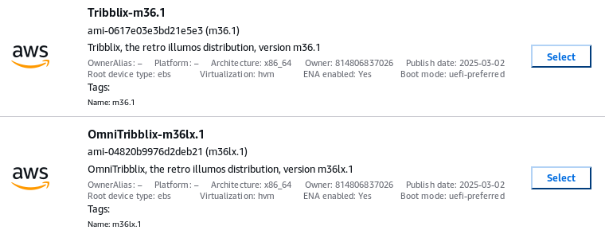

AWS - Amazon Web Services - is one place to run Tribblix in the cloud.
You can run Tribblix on an EC2 instance on AWS.
There are AMIs available for both vanilla Tribblix and the LX-enabled OmniTribblix. These are available in the London (eu-west-2) region. If you set your region to London, launch an instance, browse AMIs, and then search Community AMIs for "illumos" or "Tribblix" then you should get some results like the following:

Specifically, the currently available and supported AMIs are:
The following older AMIs are available, but will soon be dropped.
If you want to run Tribblix in a different region, then you'll have to copy the AMI.
Sometimes the networking doesn't initialise properly on the first boot. Rebooting the instance from the AWS console ought to clear that.
The images labelled (Nitro) support the new (t3, m5 etc.) instance types. They won't run on the older (t2, m4, etc.) instances.
If running on a Nitro instance, you should definitely use the m33p1 AMIs. They have an updated ena network driver with a lot of fixes. Do not enable static networking on a Nitro instance using an older AMI (original m33, or earlier) as the system will crash and not come back. There isn't any difference between the Nitro and non-Nitro images other than which instance types they will boot on.
If you see Time of Day clock errors on the console, which will manifest
itself as silly clock speeds reported by psrinfo -v,
or sleep taking a wildly different time to what you asked
for, then
echo set pit_is_broken = 1 > /etc/system.d/pit
and reboot, and all should be fine.
The m4 and similar generation instances work well, as do t2 instances. The t2.micro is just fine for Tribblix, and is on the free tier. With the current AMIs, the newer Nitro instances are a good bet, and cheaper.
I recommend you enable static networking (again, not on Nitro instance with older AMIs) with
zap staticnet -y
After launching an instance, you should be able to log in as root with your key pair. That's the only way in, there's no jack account, and no valid root password. You should create your own regular users, of course.
If you want to store data, add an EBS volume and create a separate ZFS pool. (This will also make it easier to move the data to another instance when you need to.)
The images supplied only have a smallish system disk. If you need a bigger root pool (as opposed to adding a second data pool) then create the root EBS volume with a larger size and expand the pool with:
# zpool online -e rpool c2t0d0
to get the additional space recognised. You can enlarge an EBS volume after instance creation, but it will take a reboot for Tribblix to realise that the volume size has changed.